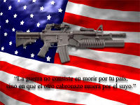

Guerra
 De: La Frikipedia, la enciclopedia extremadamente seria.
De: La Frikipedia, la enciclopedia extremadamente seria.
| De la serie fenómenos sociológicos:
|
| Guerra
|
| 
|
| Poster américano que incluyen las ediciones especiales de Playboy
|
|
| Fenómeno sociológico
|
peor que Gran Hermano
|
| Principios
|
Morir o matar en nombre de una multinacional (normalmente Texaco)
|
| Zona de origen
|
Estados Unidos
|
| Consecuencias
|
Exceso de comida, ya que falta quien la coma
|
| Símbolos típicos
|
CS, Ak-K7
|
| Frikismo
|
Alto, ya que no todos juegan al CS
|
| ¿Gusta a la gente normal?
|
tu que crees?
|
| ¿Recomendable?
|
Si sabes jugar al CS, si, si no, no.
|
| Máximo exponente
|
el elefante republicano
|
La guerra es una actividad lucrativa que consiste en que dos o mas países gastan ingentes cantidades de dinero para comprar armas a la misma multinacional, normalmente de USA, para luego tirarse las cosas unas a otros hasta conseguir dominar el mundo o al menos al vecino.
Normalmente hay muertos y heridos y algunos tienen que ir al hospital, no es nada por lo que debamos preocuparnos.
Tipos de guerra
- Guerra civil: Variante de la guerra en la que el Estado, en lugar de tirar las cosas a otro, se las tira a sí mismo. Propio de países frikis.
- Guerra fría: Variante de la guerra en la que dos Estados se limitan a mirarse de reojo desde detrás de la cortina, hacerse putadillas, hablar mal a las espaldas, amenazarse y comerse los Frikis del otro sin que te vea.
- Guerra caliente: Variante de la guerra donde los dos países después de haber pasado por la guerra fría se calientan
el uno con el otro también se le conoce como guerra declarada.
- Guerra sucia: Al concluir los enfrentamientos bélicos, los campos de batalla se dejan llenos de escombros, casquillos, muertos, armas y restos de tanques destruidos por patadas giratorias de Chuck Norris.
- Guerra limpia: Al concluir la batalla, un ejercito de mayordomos armados con plumeros y balletas, vestidos con un elegante esmoquin de rico, salen a barrer el erial.
- Guerra de garrotas: Todos los Nintenderos, Sonyers, Xboxers y supervivientes Segatas y algún que otro
puto Atariano pelean para ver que consola es mejor, las opciones son: Nintendo Wii, Sony Playstation 3, Microsoft Xbox 360, Sega Dreamcast, o Atari Jaguar.
- Guerras del futuro: Nadie sabe lo que pasa en estas guerras pero hay una teoria, van en tanques echos de huesos de personas tirando rayos laser y leche de toro por todas partes matando todo a su paso.
- Guerras del futuro: Cuando los frikis americanos atacan un pais pobre y luego proclaman su victoria.
- Guerras del futuro:Esas
mierdas como la tercera guerra mundial que joderan a tus hijos cuando tengan que estudiar historia
- Guerras del pasado:Esas que te joden a ti porque tienes que estudiarlas.
Alocuciones guerreras
Posibles causas de una guerra mundial
- Grito de guerra: Berrido que se emite en circunstancias violentas. Ejemplos: "A muerte"; "A por ellos"; "Detras de ti imbecil", "Maricón el último", "En caso de duda, la más tetuda","2+2=4, me tiro un pedo y te mato."
- Partes de guerra: Son dos: "gue" y "rra"
- Guerra y paz. Tocho infumable
- Corea.Corea norte y sur que se quieren mucho y están dando un claro ejemplo de como debemos amarnos entre países.

Sephiroth intenta ganar una guerra mundial (de él vs el mundo) todos los días, pero prefiere perder con Cloud a propósito para protejer su nueva línea de ropa a la moda
Cómo evitar una guerra
Las guerras han ganado bastante mala fama en el siglo XX, más que nada por los millones de muertos tontamente que han dejado. Por eso, hoy día se suele intentar evitar la guerra por todos los medios posibles.
Hay formas más efectivas que otras. A continuación veremos algunas de las más prácticas.
Peloteo
La forma más inteligente de evitar una guerra es peloteando sin vergüenza al país más poderoso. Desde "Pax romana" hasta "Qué buenos los Estados Unidos", hay una gran tradición pelotera mundial que sólo ha traído cosas buenas.
Cómo evitar una guerra con
USA Agresividad
Enseñar los dientes, erizar la piel y bufar son lecciones del mundo animal que muchos países tienen bien aprendida. Sin embargo, esta forma no es todo lo efectiva que parece; suele terminar con uno de los dos países arrasado.
La solución final
Una forma muy original de evitar guerras es la de Hitler: exterminar a todo el pueblo traidor mientras están dentro de tus fronteras. También llamado "La solución asiria". Ojo, como se te escapen algunos estás jodido. Al final fueron los judíos expatriados los que metieron a USA en la Segunda Guerra Mundial.
Destrucción Mutua Asegurada
La más efectiva de todas. Consiste en crear un mecanismo (por ejemplo, varios miles de misiles balísticos) con el que devolver la jugada si alguien se mete contigo. Cualquier guerra acabará irremediablemnte en un holocausto nuclear que extinguirá toda la vida del planeta. Un poco de hijoputas, eso sí.
No votar al Partido Republicano
Es la forma más eficaz para que no vuelva a haber una guerra, aunque gobierne PP.
Guerras famosas
- Guerra (Jinete De Las Sombras Su Caballo Se Llama Ruina)
- Alfonso Guerra
- Juan Luis Guerra
- George Bush Guerra
- Las guerras pubicas
- La guerra de las galaxias
- La guerra de los mundos
- Las Guerras Duendiles
- Las 3 Guerras Mundiales (En realidad son 7).
- Las Guerras Rascanas
- GTA
- CS
- Guerra del golfo
- Guerra de las golfas
- La Guerra Fría
- La Guerra Tibia
- La Guerra Caliente
- La guerra del tiempo
- Call of duty
- Medal of Honor
- Halo
- Left 4 Dead
- Left 4 Dead 2
- Guerra Negra
- Guerra Blanca
- Guerra Gris
- El señor de los platillos
Autor(es):
- Krusher
- Carlos Salavert
- Doctor grijander
- Loleit0r
- Epikurolibre
- Masterfriki
- Twigga
- El Sevillano
- Nadaquever
- Blaken
Frikipedia 2005-2016, Licencia
GFDL 1.2 - Extraído por FrikiLeaks